N2 Sensores analógicos
Un sensor analógico entrega un número que varía poco a poco. Para sacarle partido hay que leerlo, entender su rango, convertirlo con mapear y decidir con un umbral que has calibrado tú. Se aprende el método con dos ejemplos guiados, el potenciómetro y el LDR, y se aplica a dos sensores que eliges tú. El puerto serie es el instrumento de medida en todo el nivel.
🎯 Cómo se lee un sensor analógico
Una magnitud analógica varía poco a poco: el giro de un mando, la humedad de la tierra, la intensidad de un ruido. La placa la mide con un conversor analógico-digital (ADC) de 12 bits y devuelve un número entero entre 0 y 4095 (212 = 4096 valores) que corresponde a una tensión entre 0 y 3,3 V.
La relación es aproximadamente proporcional: la mitad de la tensión, 1,65 V, da más o menos 2048. Para una estimación, tensión ≈ lectura × 3,3 / 4095. Es solo una estimación: según Espressif, el conversor del ESP32 tiene un error de hasta ±6 % entre chips, y recomienda no fiarse de las medidas en los extremos del rango. Por eso este material mide siempre con tu placa y tu sensor, y no da por buenos los números de una tabla.
1 · Montaje G-V-S
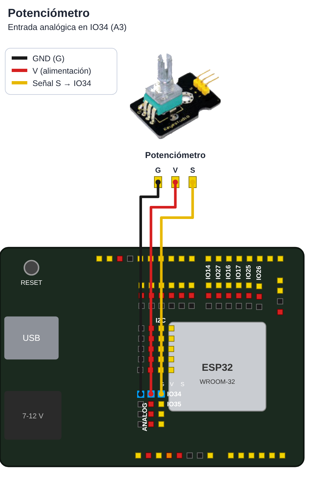
🛠️ Montaje y puesta en marcha
- Con la placa desenchufada, conecta G a GND, V a V y S a IO34 (o IO35). Revisión por otra persona con la lista de comprobación.
- Conecta por USB, abre el Connector y STEAMakersBlocks.
- Construye el programa y pulsa Subir.
- Abre la Consola y mueve, tapa, moja o golpea según el sensor.
2 · Programa: lectura en bruto y en porcentaje
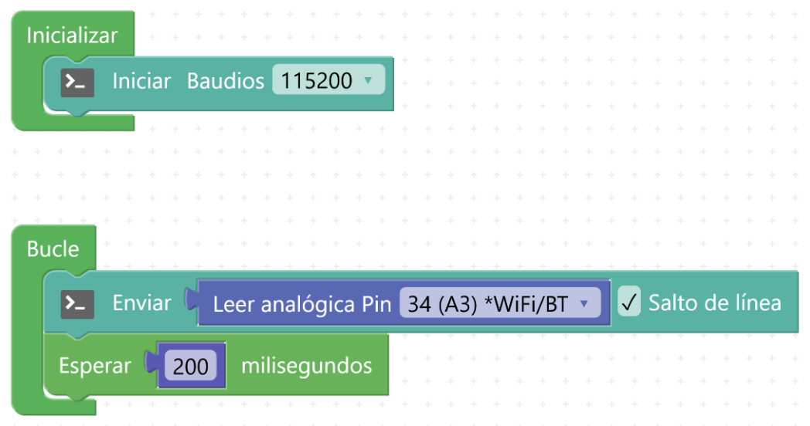
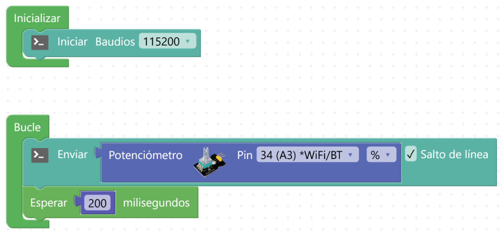
🔎 Primero mide: el puerto serie es tu instrumento
Un sensor analógico no dice nada hasta que lo lees. Antes de programar cualquier decisión, deja el programa de lectura funcionando y mira la consola: ahí están los números que te da tu sensor y de ellos depende todo lo demás.
- Sube el programa de lectura y abre la Consola (115200 baudios).
- Déjalo quieto unos segundos: ¿el valor oscila? Anota cuánto. Eso es el ruido.
- Llévalo a un extremo (tapado, a oscuras, sin giro…) y anota el valor. Después, al extremo contrario.
- Pregúntate si subir la magnitud sube o baja el número. En algunos módulos va al revés de lo que esperas.
- Apunta el mínimo, el máximo y el valor en reposo en la tabla.
| Situación que provoco | Valores que leo en la consola | Qué me dice |
|---|---|---|
Los números que anotes aquí son los que usarás después para mapear, fijar un umbral y calibrar. Sin esta medida, cualquier umbral es una suposición.
🎛️ Ejemplo guiado 1 · Potenciómetro
El potenciómetro es el mejor sensor para empezar porque tú controlas el valor: al girar el mando recorres todo el rango, de 0 a 4095, y lo ves en la consola. El montaje y el programa de lectura son los de arriba.
Ahora que has visto el rango, úsalo: añade un módulo LED en IO17 (D4) para que el giro regule su brillo.
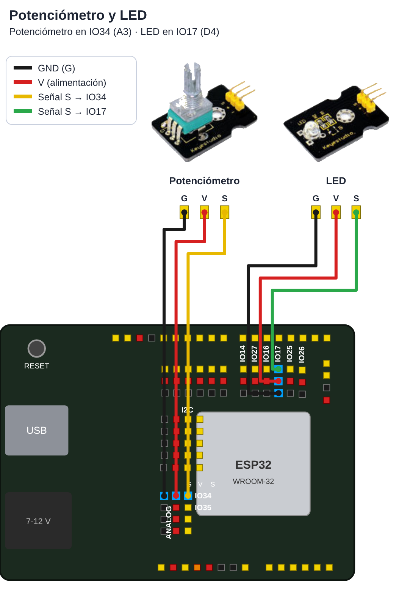
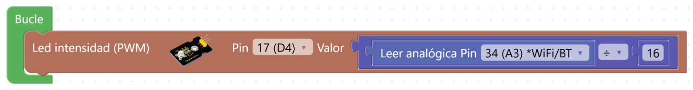
Para pensar: ¿por qué 16? ¿Qué número habría que poner para un rango de 0 a 100?
☀️ Ejemplo guiado 2 · Luz (LDR)
El LDR cambia su resistencia con la luz y la placa lo lee como un número. A diferencia del potenciómetro, no controlas el valor: depende de la luz de tu aula en ese momento, y por eso conviene medirlo en tu sitio.
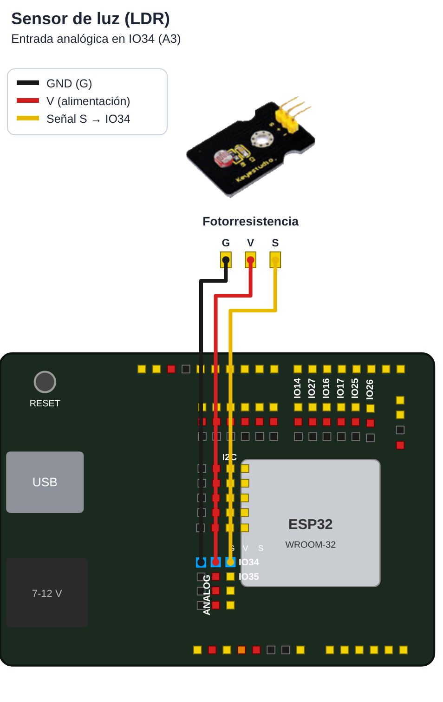
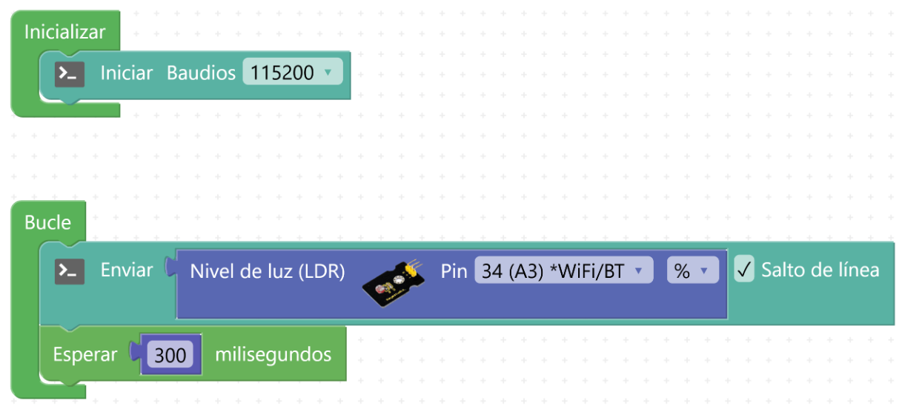
- Lee el valor con luz normal y anótalo.
- Tapa el módulo con la mano y anota el valor más bajo.
- Acércale la linterna del móvil y anota el valor más alto.
- Decide a partir de qué valor consideras que «es de noche» y escribe por qué has elegido ese.
La decisión con histéresis y el LED que se enciende solos de noche los verás en la práctica PI3 · Luz de noche.
💡 Del sensor a la salida: controla el brillo de un LED
Hasta aquí has medido. Ahora vas a usar la medida para mandar sobre una salida: el brillo de un LED que sigue al giro del potenciómetro. Es el primer programa que une entrada analógica, mapeo y PWM, que es justo lo que se repite en proyectos más grandes.
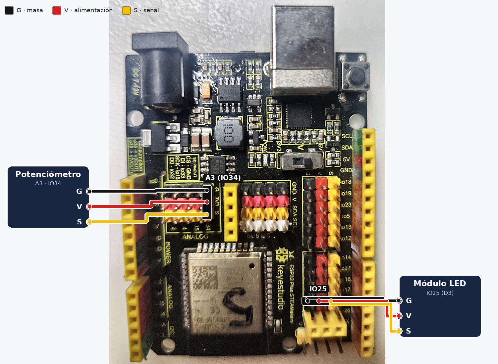
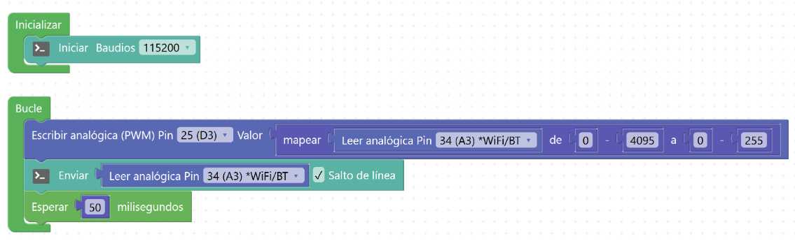
- Conecta el potenciómetro al pin analógico A3 (IO34) y el módulo LED a IO25 (D3), los dos con G-V-S.
- Sube el programa y gira el potenciómetro. El LED debe pasar de apagado a brillo máximo.
- Fíjate en el puerto serie: el valor llega de 0 a 4095, pero el PWM solo admite de 0 a 255. Por eso hay que mapear.
El PWM se explica con detalle en N1b · Salidas digitales y PWM.
📋 Sensores analógicos del kit
Esta es la lista de la que eliges. Si falta alguno, coge otro parecido: el método es el mismo. Los dos primeros son los ejemplos guiados; elige tus sensores entre los demás. Si te atascas, cada uno tiene su esquema y su programa en la pestaña «Más sensores»: ábrela después de intentarlo.
| Sensor | Qué mide | Bloque propio | Pin sugerido | Detalle |
|---|---|---|---|---|
| Potenciómetro | Giro de un mando | «Potenciómetro» | IO34 (A3) | Ejemplo guiado 1: va de 0 a 4095 con el giro. |
| Sonido | Nivel de ruido | «Nivel de sonido» | IO34 (A3) | Mide la intensidad, no el tono. Habla, aplaude y compara con el silencio. |
| Humedad de suelo | Humedad de la tierra | «Sonda de humedad» | IO35 (A2) | Sumerge solo las puntas. Anota aire, tierra seca y tierra mojada. |
| Vapor / agua | Superficie mojada de las pistas | «Agua/Lluvia/Vapor» | IO34 (A3) | Moja solo las pistas, nunca los componentes. |
| Joystick | Posición de dos ejes | «Posición del Joystick» (uno por eje) | IO34 (A3) y IO35 (A2) | Ocupa dos entradas analógicas; el botón no se usa aquí. |
| Temperatura (NTC) | Temperatura | «Temperatura ºC (NTC)» | IO34 (A3) | Calienta con los dedos y compara con un termómetro. Se programa igual que el potenciómetro. |
| Luz (LDR) | Cantidad de luz | «Nivel de luz (LDR)» | IO34 (A3) | Ejemplo guiado 2: tapa el módulo con la mano y acércale una linterna. |
🧮 Mapeo: pasar de un rango a otro
La lectura (0–4095) casi nunca es lo que necesitas. Quieres un porcentaje, un brillo de 0 a 255 o un ángulo de 0 a 180°. El bloque mapear convierte un valor de un rango de entrada a otro de salida de forma proporcional:
salida = (entrada − a) × (d − c) / (b − a) + c, con a–b el rango de entrada y c–d el de salida.
Por ejemplo, 2048 mapeado de 0–4095 a 0–100 da casi 50. En Arduino la función de mapeo trabaja con números enteros: los decimales se pierden.
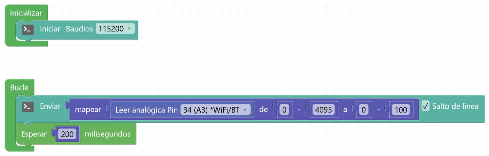
| Quieres… | Rango de salida | Ejemplo de uso |
|---|---|---|
| Un porcentaje | 0 – 100 | Medidor en consola |
| Brillo de un LED (PWM de 8 bits) | 0 – 255 | Atenuador |
| Un ángulo | 0 – 180 | Posición de un servo |
| Una escala invertida | 255 – 0 | Más oscuridad, más luz |
Calibrar y limitar
Un sensor real casi nunca recorre todo el rango teórico: tu LDR quizá solo va de 1200 a 3000. Mide el mínimo y el máximo de tu sensor y úsalos como rango de entrada. Después, limitar evita que una lectura fuera de rango dé valores absurdos (por ejemplo, un 130 %).
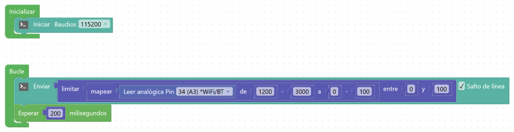
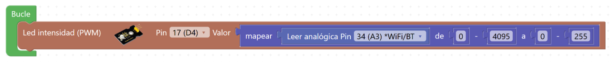
📝 Tu ficha
Elige dos sensores de la lista y completa una ficha para cada uno. Mide con la consola y anota los valores reales de tu módulo.
| Sensor | Pin | Mínimo medido | Máximo medido | Valor típico en reposo | Ruido (cuánto oscila quieto) | Rango útil |
|---|---|---|---|---|---|---|
Si no devuelve nada o devuelve cosas raras
🎚️ Ruido, umbral e histéresis
Una lectura analógica nunca está perfectamente quieta: oscila unos pocos valores. Eso es ruido. Si decides con un único umbral, un valor que baila alrededor del límite hace que la salida parpadee.
Tienes tres herramientas. La media de varias lecturas (por ejemplo, 10) suaviza el ruido. El umbral es el valor a partir del cual tomas una decisión: se calibra con medidas, no se inventa. La histéresis usa dos umbrales distintos (uno para activar y otro para desactivar) para que no haya vibración en el límite.
Las verás en acción en las prácticas de PI · Sensores + actuadores.
🔁 Retos de repaso
Hazlos con el sensor que elegiste.
Frase por zonas
Muestra «bajo», «medio» o «alto» según el tercio del rango útil de tu sensor.
Porcentaje propio
Con mapear y limitar, obtén un 0–100 % que dé 0 en tu mínimo medido y 100 en tu máximo medido.
Sin ruido
Calcula la media de 10 lecturas y compara la estabilidad con la lectura directa. Explica cuánto has ganado.
🧰 Más sensores
Esquema y programa de los sensores de la lista (el potenciómetro y el LDR ya tienen su ejemplo guiado). El montaje es siempre G-V-S: solo cambia el módulo y el pin.
Sonido · IO34 (A3)
Mide la intensidad, no el tono. Habla, aplaude y compara con el silencio.
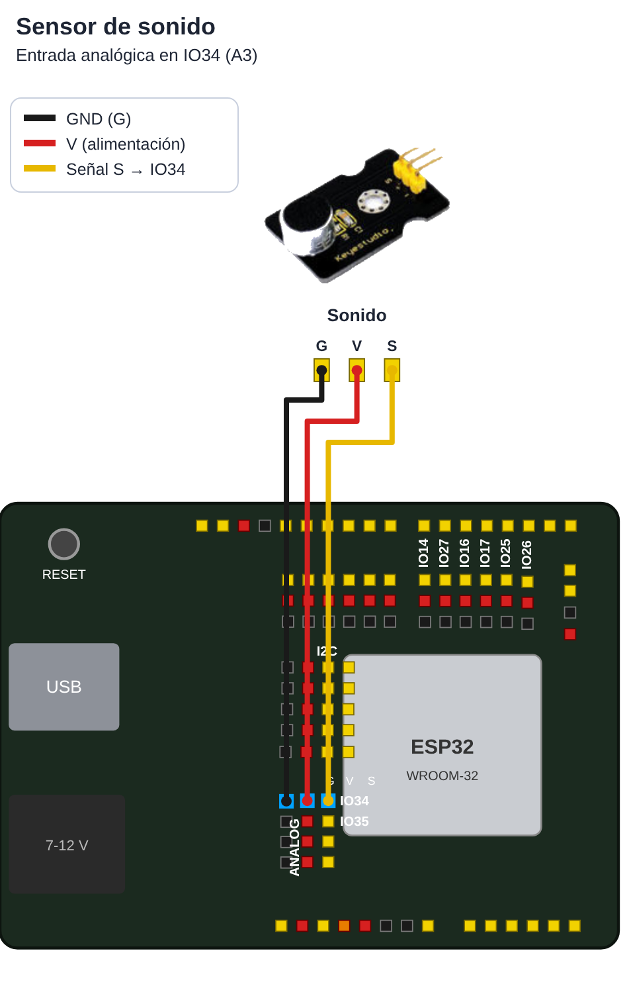
Humedad de suelo · IO35 (A2)
Sumerge solo las puntas. Anota aire, tierra seca y tierra mojada.
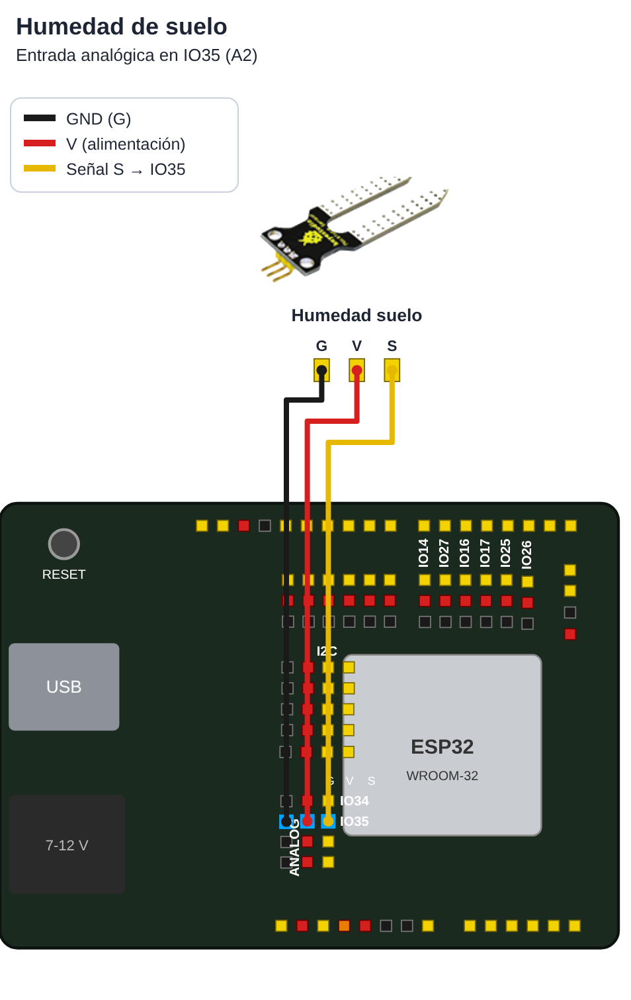
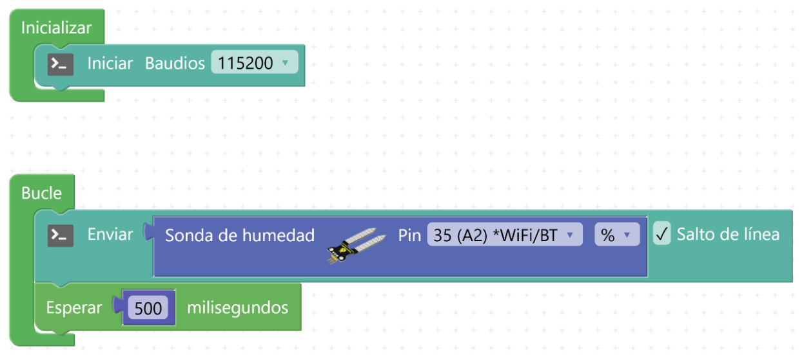
Vapor / agua · IO34 (A3)
Moja solo las pistas, nunca los componentes.
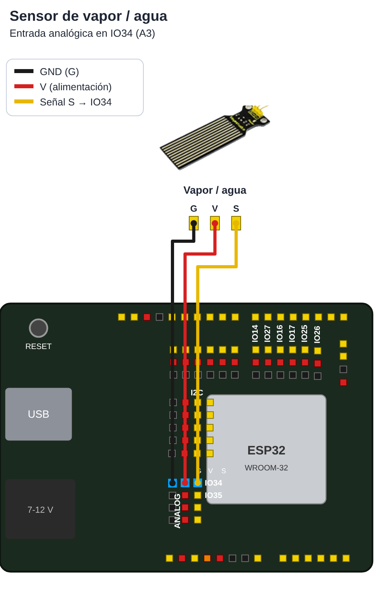
Joystick · IO34 (A3) y IO35 (A2)
Ocupa dos entradas analógicas; el botón no se usa aquí.
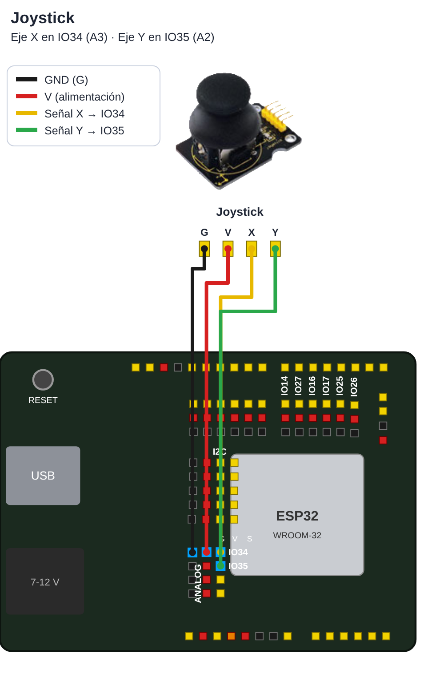
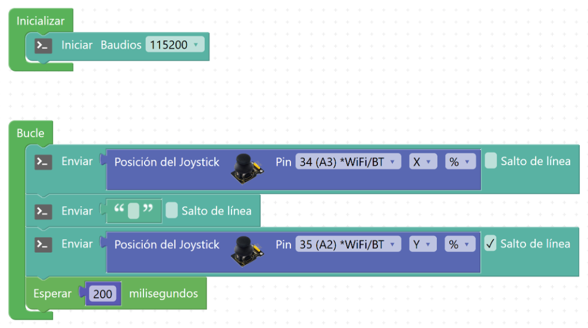
Temperatura (NTC) · IO34 (A3)
Calienta con los dedos y compara con un termómetro. Se programa igual que el potenciómetro.
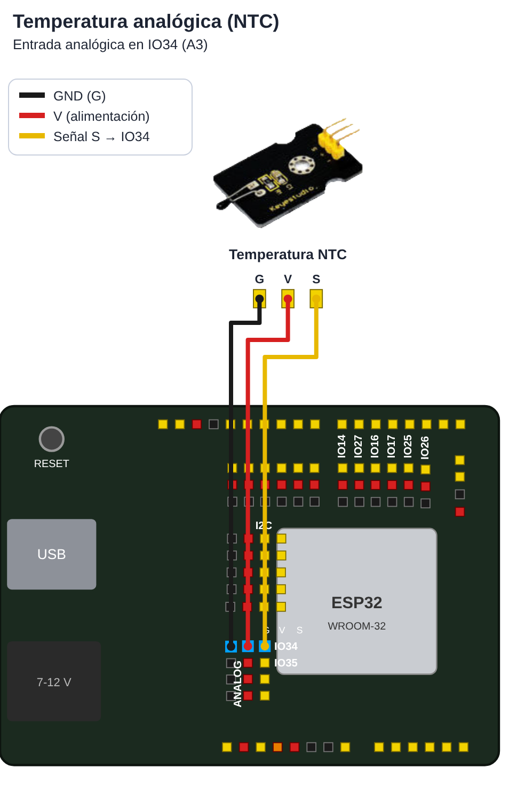
📓 Porfolio
- Las dos fichas con los valores medidos y la foto del montaje.
- Una captura de la consola y el programa de un reto de cada nivel.
- Una explicación de cómo has calibrado el rango de tu sensor.
✅ Comprueba lo que has aprendido
1. ¿Qué rango de valores devuelven las entradas analógicas de la placa?
2. Lees 2048. ¿Qué tensión hay aproximadamente en el pin?
3. ¿Por qué se eligen IO34 e IO35 y no A0 o A1?
4. ¿Por qué hay que calibrar el sensor de humedad?
5. El aviso de riego parpadea cuando la humedad está justo en el umbral. ¿Cómo lo evitas?
6. Mapeas el valor 2048 del rango 0–4095 al rango 0–100. ¿Qué obtienes aproximadamente?